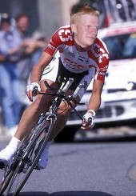

Is it really a
mystery why Boom Boom Ullrich
continues to lose to Jovi Armstrong?
The Tour de Woonsocket
(a Bondo bike hash)
Run #1003, June 20, 2005
Hare: Lance “Jovi” Armstrong (Bondo)
Location: Woonsocket, RI
Weather: High 60's, clear and breezy.
Present:
Jan “Boom Boom” Ullrich (Basket)
Marco “Worm Infested” Pantani (WIPOS)
Tyler “Boner” Hamilton (Fuwangi)
Kam-Po “Fairy” Wong (Dry Foot)
Dede “Just Plain Stupid” Berry (Just Kristen)
On-on-on:
Eddie “Belle” Merckx (Tinker)
Magen “Big Shit” Long (Just Big Shit)
Three Little “Jovi” Grandchildren
Jake, Ben, & Scout
Not Present:
Miguel “Syphilitic Dictaphone” Indurain (Oozing)
Jeannie “Hoover” Longo (SESYB)
Greg “The Nerd” LeMond (Async)
Dr. Prentice Steffen (WHO)
Seamus
The Tour:
Pre-lube: The Tour de Woonsocket has often been compared to the grueling 2,500 mile, one-month race Le Tour de France. The six-time Tour de France winner Lance Jovi Armstrong, now retired from professional cycling, was selected as this year’s course setter. Boldly, Jovi Armstrong warned that the Tour de Woonsocket will be even more difficult and treacherous than the Tour de France ever was, testing extreme limits of the body, mind, and soul.
A victorious Jovi Armstrong in the Tour
de France.
With such frightening rhetoric of such a grueling race, the big German Jan Boom Boom Ullrich, the long-time rival of Jovi Armstrong both on and off the bicycle, promised a victorious performance. And Marco Worm Infested Pantani, who died a the age of 34 from mysterious causes, just as mysteriously came out of his grave to compete once again (too bad the team doctors couldn’t get all the worms out of his corpse). But the young performers did not to give in too easily to the veterans, namely the up-cuming American star Tyler Boner Hamilton and top Asian cyclist Kam-Po Fairy Wong. And in a bold and controversial move, race organizers allowed top female cyclist Dede Just Plain Stupid Berry to compete with the men. Being the daughter of the cycling legends Jovi Armstrong and Magen Big Shit Long, Just Plain Stupid Berry certainly had the natural talent to compete with the boys. And the women’s movement has apparently made historic strides over the years, as nobody could ever have guessed that the macho-man sport of cycling would ever let men and women compete together.
The cycling veteran Big Shit Long, decided to sit this one out, suggesting she didn’t want to embarrass her husband Jovi Armstrong, as she beats him quite often [Little does she know, he likes it! But I digress.]. Another cycling legend Eddie Belle Merckx, usually game for any challenge on two wheels with women involved, chose to stay in retirement. But mysteriously absent were the Spaniard superstar (and often confused as being Pakistani) Miguel Syphilitic Dictaphone Indurain , Greg The Nerd LeMond (still in a tiff with Jovi Armstrong over the doping scandal), and the French female cyclist legend Jeannie Hoover Longo. The absence of Hoover Longo was a serious disappointment for the Tour, but the race must go on. And after the scandalous 2003 Tour de France, where allegations and arrests over illegal doping dominated the headlines, the U.S. Postal team doctor Dr. Prentice Steffen (WHO?), remained in exile somewhere in the Carolinas. Unfortunately, he failed to realize that the real dopes were those who decided to compete in the Tour de Woonsocket.
Before the race even started, confusion ensued:
Another fine Bondoism – his posted directions, if anyone could find it in the RIH3 Message Board.
hey you fucken asso
run will be at bondo's
bike hash bike hash motors allowed but not for everyone
dogs will be fenced in..... much too long for any dog......
bike hash mostly street some off road .....
need a bike contact bondo now.......
bondo's direction
follow your heart and you will find the enlighten one....
And then he tried to improve upon it, by posting on the Guestbook. But why try to improve upon perfection?
hey why is it the fucken stupid message board will not take my fucken directions.... Well its a Bike hash Bike hash at bondo's bike hash at bondo's directions follow your heart and you will find the bodisavatte home or take 146 north to slatterville exit end of ramp take a right at light take a right at next light take a left at next light take a right and after 1/2 mi take a left onto meadow road purple house at end of road......dogs will be fenced in...... unless you are really stupid and wish for your dog to have a heart attack from running about 15 mi.....
Yet the race, amazingly, if not unfortunately, got underway…
Stage 1: Bondo’s to St. Paul’s Cemetary
With the race scheduled to begin at 6:30, the organizers delayed the start to see if any late-cumers might arrive. Then the strong German Boom Boom Ullrich pulled in, and the peleton (pack of cyclists) smartly took off. Disappointingly, the race organizers failed to block off traffic, so the riders had to navigate the annoying and sometimes treacherous cars. But the real tragedy at the start of the race was the lack of marks on the course. The younger riders Boner Hamilton, Just Plain Stupid Berry , and Fairy Wong managed to lead the peleton onto true trail, heading northeast. A check at St. Paul’s Cemetary confused Fairy Wong, who led Worm Infested Pantani into the cemetery. It was Boner Hamilton who found true trail ending at a gravel lot, and won the first stage and took the overall race lead. Like the coveted Yellow Jersey in the Tour de France, the overall leader in the Tour de Woonsocket wears the Bondo-beer soaked jersey. Just Plain Stupid Berry provided a strong performance coming in second. Jovi Armstrong was the sweeper cyclist, basking in the glow of setting a brilliant stage (obviously delusional over too much success). The usually powerful German Boom Boom Ullrich was nowhere to be seen and at risk of dropping out of the Tour on the very first stage. It was rumored that his lavish off-season lifestyle, fervent with drugs, alcohol, and late-night parties, have deteriorated the German’s fitness.

The young
American super-star Boner Hamilton
dominated the early stages.
Stage 2: Undulating Railroad Grade Stage
The infamous Paris-Roubaix race was nicknamed “Northern Hell” by the riders who endured the 167-mile race through narrow cobble-stone streets of the Roman empire era, concluding with many cyclists visiting the emergency room. However, the Undulating Railroad Grade Stage of this Tour made the cobble-stones of Paris-Roubaix seem like fresh, smooth pavement. This stage tested the physical endurance and mental strain of every rider to their very limits.
Building on his early success, Boner Hamilton quickly broke away from the peleton heading south on old railroad grade. The chase lead by Fairy Wong and Just Plain Stupid Berry tried mightily to catch Boner Hamilton. But the relentless undulations of the railroad grade, large stones, sporadic mud and puddles had impeded any chance of catching the speedy Boner Hamilton. Even Jovi Armstrong helped break wind for the peleton. Unfortunately, this appeared to hinder the riders’ efforts more than it helped them. The once mighty Worm Infested Pantani lagged at the back of the pack. It seemed the years of decaying in his grave took a toll on his physical condition. Exiting from the miles and miles of unrelenting railroad grade, Boner Hamilton won the stage and retained the Bondo-beer soaked jersey. But his victory was by only a small margin, as the talented Fairy Wong nearly caught him, yet the effort drained his energy. An at this point, it appeared Boom Boom Ullrich had abandoned the excruciating race.
The once
successful Worm Infested Pantani,
now struggles in the Tour (notice the nice earrings!).
Stage 3: The Suburban Mountain Stage
After the grueling and long undulating railroad stage, the riders could have used a break. But course-setter Jovi Armstrong wanted to crush the spirits of his once-rivals. It appeared his ruthlessness had no limits as the next stage was a horrific suburban mountain stage. The vertical elevation gain must have been at least 100 (one hundred) feet! The French Alps were mere ant-hills in comparison to this behemoth in Woonsocket. Heading north on a quiet suburban street, the peleton spread out, with Boner Hamilton again in the lead. Fairy Wong reached deep into his soul to find the strength to catch him. Nearing the top of the mountain, his legs abandoned him, as the impressive Just Plain Stupid Berry caught and passed Fairy Wong. And riding her momentum up that mountain, she caught Boner Hamilton who again led the entire stage. But in a sprint finish, Boner Hamilton again won the stage, and remained the overall leader.
The beautiful yet Just Plain Stupid Berry
is a rising star at the Tour,
and a surprising favorite for the win!
Stage 4: Hills by the Lakeside
The next stage started off with confusion as a check led Boner Hamilton and Fairy Wong in the wrong directions. Led by Jovi Armstrong, it was Worm Infested Pantani who took the stage lead, with Just Plain Stupid Berry drafting closely behind. Boner Hamilton found himself in the unusual position of having to catch the leaders. Working closely with Fairy Wong, the two young riders made progress catching the others. And then out of nowhere, the powerful and much-feared German super-star showed up out of nowhere! Yes, Boom Boom Ullrich decided to join the race. Since he failed to complete the Undulating Railroad Grade and Suburban Mountain stages, he was already disqualified. But Jovi Armstrong allowed him to participate just in good sport. The riders found themselves along the banks of Harris Pond, and the peleton, all together now, struggled mightily over the relentless hills, comparable to those found in the rugged Pyrenees Mountains in Europe. All complained of sore arses, as the stage seemed to never end.
The bulging
muscles of the Big German
Ich muß sie zerquetschen! (I must crush them!)
Jovi Armstrong ist mein Weibchen!
(Jovi Armstrong is my bitch!)
The pack found themselves heading northwest along Elm Street, where Fairy Wong managed to break away from the peleton to take the lead. However, Boom Boom Ullrich surreptitiously made Fairy Wong make a wrong turn and end up DFL. Yet Fairy Wong found the strength and tenacity to pass everyone and catch Boom Boom Ullrich. Boner Hamilton and Just Plain Stupid Berry noticed the brewing rivalry and kept the two within reach. Jovi Armstrong and Worm Infested Pantani didn’t’ seem to care, as they casually rode in the peleton and reminisced about the old days of racing. Finally, it was the big German who won the stage, ending at a “B” at a popular nature park. Nevertheless, since Boom Boom Ullrich was already disqualified, Boner Hamilton retained the coveted Bondo-beer soaked jersey.
At the end of this stage, all were treated to Bondo-brew and many blood-thirsty mosquitoes. Replenishing themselves
with fluids, alcohol, and calories, the riders were eager to resume the Tour as they were quickly losing precious blood.
Jovi Armstrong decided at this point to drive the race support vehicle the last stage.
Stage 5: Farm Street, Farm Street, Farm Street
Being second to Boner Hamilton, Just Plain Stupid Berry saw this last stage as her final opportunity to win the race. She quickly broke away from the peleton and took a lengthy lead. This forced Boner Hamilton to launch a chase group, with Fairy Wong closely following. The stage was relatively straight forward – Blackstone St. to Farm St. to Jovi Armstrong’s house. The previous stage win by the big German took its toll on him, as he and Worm Infested Pantani not only lagged behind, but managed to get lost on this very straight and simple stage. Along Farm Road, Jovi Armstrong once again tested his “relationship” with the authorities as he laid on his horn passing each one of the riders (obvious jealousy that he is no longer in their league of supreme physical condition). A police cruiser slowed down and contemplated apprehending the menacing Jovi Armstrong, but against better judgment the cruiser continued on.
Fairy Wong's love for young nubile
elephants
distracted his otherwise brilliant efforts in the Tour.
Nearing the end of the stage, by St. Charles Cemetary, Boner Hamilton caught the leader
Just Plain Stupid Berry, and he took the lead. Fairy Wong also
caught Just Plain Stupid but they decided to work together to reign in Boner Hamilton. Within sight of the finish on Winter St., the race leader Boner Hamilton, made a bone-head move (why do you think they call him Boner
Hamilton?) and turned south on Prospect St., just a block away from the finish. Just Plain
Stupid Berry and Fairy Wong watched Boner Hamilton head
in the wrong direction, as they took the race lead. It was a sprint finish onto Woodland Rd. and turning onto Meadow Rd
to the finish. And to everyone’s surprise, Just Plain Stupid Berry won by the slimmest of
margins over Fairy Wong! And for the first time in history, a woman earned the Bondo-brew
soaked jersey as the winner of the Tour de Woonsocket. Fortunately for Boner Hamilton, the
loss of Boom Boom Ullrich and Worm Infested Pantani had
lifted his spirits. The beer helped as well.
Conclusion:
On-on-on was at Bondo’s abode, where circle was held as Boom Boom Ullrich and Worm Infested Pantani unfortunately found their way and finished. Comments on the Tour were the usual, but added points were given for a rare bike hash and the back-sliding bimbo Just Kristen. Total: +6.9! No doubt supported by Tinker’s +104.2 (who didn’t even participate in the Tour). Hashit to Dry Foot Fairy, for no worthy reason at all. Hashers were joined by Just Kristen’s three young children who seemed to be fascinated with the hashers as they sang incomprehensible, yet amusing songs. Then all enjoyed Bondo’s dynamites with Just Big Shit assisting with the food and covering the innocents’ little ears. There was also an impromptu naming, as Just Kristen became Just Plain Stupid (JPS), as she didn’t have the wherewithal to deny her genetic links to Bondo Jovi.
All in all, the Tour de Woonsocket was deemed a great success, but in reality it was just another pathetic waste of a Monday evening.
The once dominant Belle Merckx
sat this one out.
"I could win this Tour in my sleep!" he was quoted as saying.
Is it really a
mystery why Boom Boom Ullrich
continues to lose to Jovi Armstrong?
After three Tour de France wins
The Nerd LeMond backs down to the almighty Jovi Armstrong
No wonder the U.S. Postal team doctor
Dr. Prentice Steffen got caught up in dope!
The Spanish-Pakistani superstar
Syphilitic Dictaphone Indurain
was a surprising no-show.
Of course everyone missed the
French-Canadian star Hoover Longo.
On On

Dry Foot Fairy